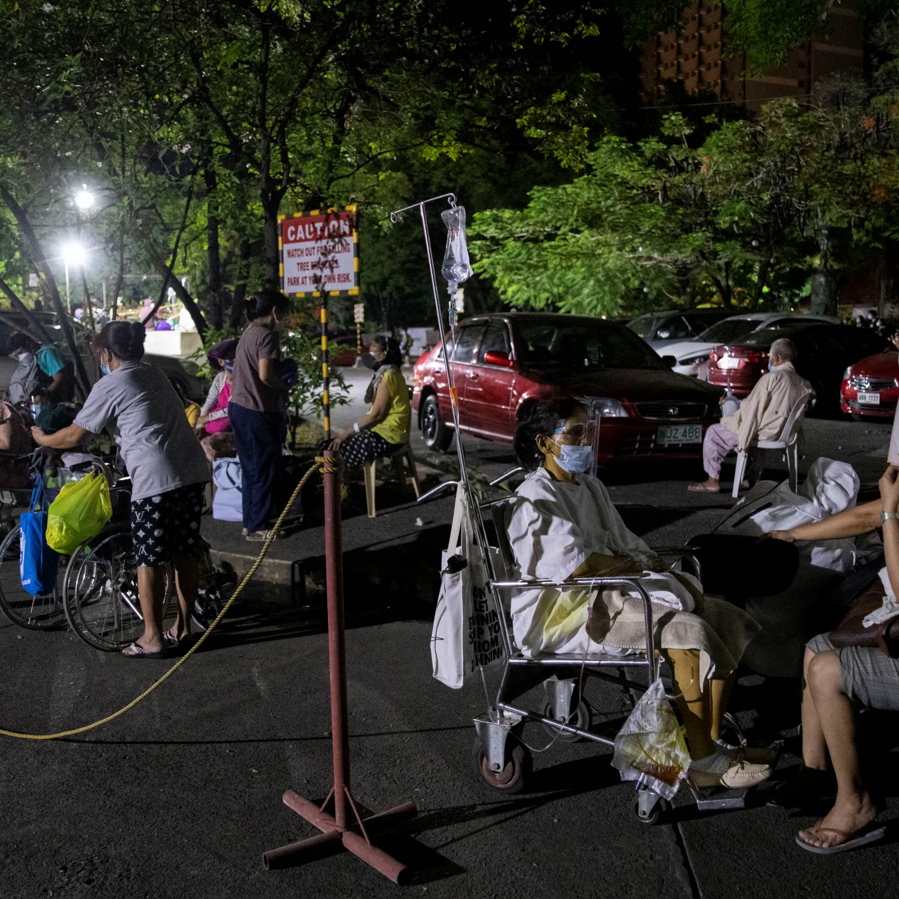

What is being done about it?
National programs like the Philippine Health Insurance Corporation (PhilHealth), are among others that seek to bridge the disparity in healthcare and bring equal access to it for Filipinos. Additionally, Primary healthcare is delivered by Barangay Health Centers (BHC). These are community-based clinics run by volunteers, and provide a range of services. They adjust their fees depending on income and family size.
Why is it important?
Structural Racism is a serious problem and can lead to higher risks of disease and death in certain areas that lack hospitals
For example, the whole of Region 11 has 5 Level 3 hospitals. A level 3 hospital should have a training program and residency program in 4 major clinical services, a physical medicin and rehab unit, a bloodbank, a pharmacy, a dialysis unit, an outpatient surgery center, a licensed laboratory, and and imaging facility. These hospitals also include all the facilities needed for level 1 and level 2 hospitals. (“PART I Introduction: CLASSIFICATION OF HOSPITALS,” 2013)
Again, the Davao region only has 5 of these hospitals. Among them, only 2 are public. 4 of them are in Davao City. Compared to Region 12’s 2 hospitals, this does not sound bad. But compared to Metro Manila’s 57 Level 3 hospitals, we can see the obvious disparity.

In the Philippines
In the Philippines, structural racism is one of the biggest problems faced hindering proper healthcare. There is a significant gap in healthcare access between wealthy and poor Filipinos. Cities in places like Metro Manila have many newer hospitals, meanwhile about 70-80 million Filipinos do not have access to this, and many rarely, or never, see a doctor (Evangelista et al., 2022). About 50% of Filipinos lack even primary care. This is because many live in remote areas, and a lot of places lack healthcare providers or professionals. Hospitals are condensed into certain areas, and then are dispersed unevenly.